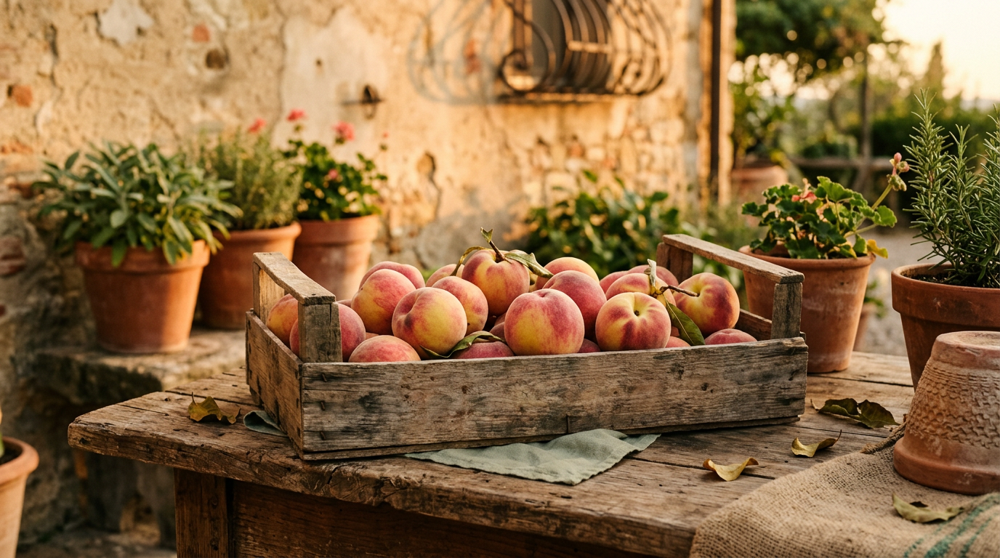

The 90th Peach Festival — chronicle of a 2026 summer.

From 20 to 26 July 2026 the village celebrated the ninetieth edition of the Peach Festival. Seven days spread across every neighbourhood, from the Lakeside to the Old Town, from Le Mole to Pavona, from Laghetto to San Paolo. The round number carries a story almost a century old, and a fruit that here has a name of its own.
Guancia di canonico
Castel Gandolfo's signature product is the peach, which at these latitudes is called guancia di canonico, "canon's cheek", for its rosy, velvety appearance ([Visit Castelli Romani — Guance di canonico](https://www.visitcastelliromani.it/gusto/guance-di-canonico/)). Its distinctive flavour comes from the volcanic soils of the Alban Hills where the orchards are planted: potassium-rich, mineral, well-drained soils fully exposed to the summer sun. The Festival is its oldest showcase: recent editions have displayed more than a hundred varieties, from the Castelli orchards, the rest of Italy and abroad.
Ninety years of a feast
The number ninety carries weight. The Festival began in the mid-1930s as a harvest thanksgiving, wove through the post-war recovery, followed the village's growth as a summer resort and its inclusion among Italy's most beautiful villages. The 2026 edition, the ninetieth, took an extended form: seven days, from Monday 20 to Sunday 26 July, with itinerant events across all the neighbourhoods ([Metropolitan City of Rome — 90th Peach Festival](https://www.cittametropolitanaroma.it/events/event/castel-gandolfo-90a-sagra-delle-pesche-una-settimana-di-festa-tra-gusto-spettacoli-e-tradizione/)).
The opening ceremony took place on the Lakeside with a ribbon cutting attended by local authorities and civic associations, followed by the traditional free peach tasting and an evening show. All week long each neighbourhood hosted food-and-wine stands and entertainment areas with free tastings of local products ([Municipality of Castel Gandolfo](https://comune.castelgandolfo.rm.it/it/menu/news?page=18)).
The blessing of the peaches
The most solemn moment remains the blessing of the peaches on the parvis of the Pontifical Parish of San Tommaso da Villanova, Bernini's church on the main square. In its historical editions, on Sunday morning a group of young locals in period costume walks up the village to the Papal Palace to offer baskets of fruit to the Holy Father — a devotional gesture that has, over time, become a civic rite ([Visit Castelli Romani — Castel Gandolfo](https://www.visitcastelliromani.it/informazioni/castel-gandolfo/events/)). The rite is accompanied by the Fanfara Città di Castel Gandolfo, a fixed presence in recent decades, and by the flag-wavers and musicians of the cultural association Lo Scudo di Lepanto.
The cultural programme
Alongside the food events, the 2026 edition offered a rich cultural programme. From 20 to 25 July the Sala Consiliare Marcello Costa, in piazza della Libertà, hosted a photographic exhibition dedicated to the history of the Festival and of the town, with archive images from the earliest editions. The Lakeside framed a themed market and performances by street artists. Over the weekend the old town came alive with free guided tours, family games, wine and peach tastings and evening shows.
“One of the fruits that symbolise this land.”Metropolitan City of Rome Capitale — official communication for the 90th edition
What remains of a festival ninety years old
What remains is a shared calendar — the second half of July is when Castel Gandolfo's neighbourhoods recognise themselves as one single village. What remains is the growers: family-run orchards that keep the local variety alive in a market dominated by large distributors. What remains is the tie with the pontifical parish, whose blessing recalls that the village has been, since 1596, papal land — and that the Apostolic Palace, fully active again with Pope Leo XIV, continues to be part of the civic landscape.
What remains, above all, is a rhythm. A festival that has lasted ninety years is no longer just an event: it is the way a community marks its calendar and presents itself to visitors. Whoever arrives in Castel Gandolfo in the last week of July finds not a tourist fair but a village at its best, with just-picked peaches, a full church parvis and a fanfare that accompanies a tradition older than almost everyone taking part in it.